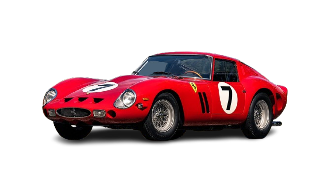
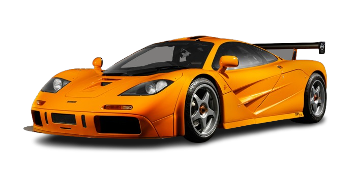
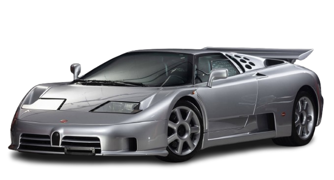
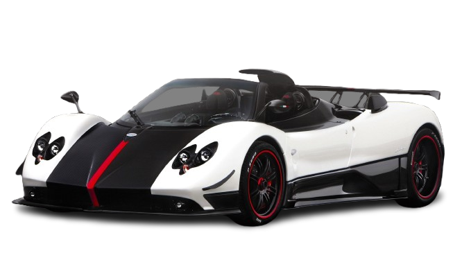
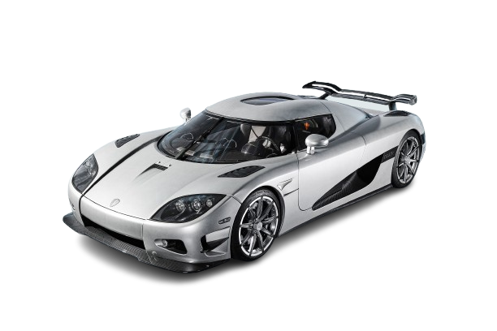
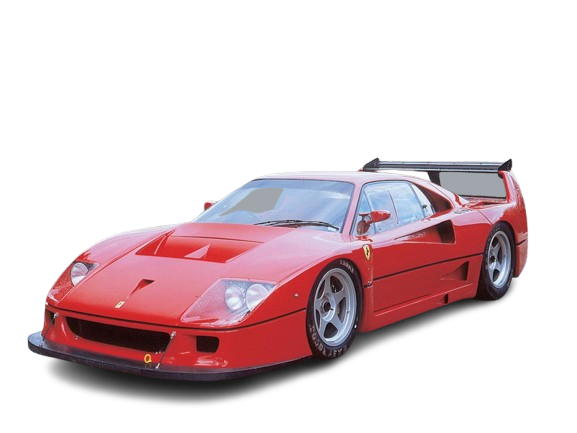

Los Coches Más Exclusivos de la Historia
Descubre los vehículos más raros y exclusivos jamás fabricados.
Ferrari 250 GTO
36 unidades
El Ferrari más codiciado. Solo se fabricaron 36 unidades en 1962. Ganó las 24 Horas de Le Mans.

McLaren F1 LM
6 unidades
Solo 6 unidades fueron producidas. La versión más extrema del icónico McLaren F1.

Bugatti EB110 SS
30 unidades
El último supercar de Bugatti antes de su resurgimiento. Solo 30 unidades del SS.

Pagani Zonda Cinque
5 unidades
El "Cinque" significa cinco en italiano. Solo 5 fueron fabricados, todos en rojo.

Koenigsegg Trevite
2 unidades
Uno de los Koenigsegg más raros. Solo 2 fabricados para homologación.

Ferrari F40 LM
19 unidades
La versión de competición del F40. Solo 19 unidades para uso en pista.
